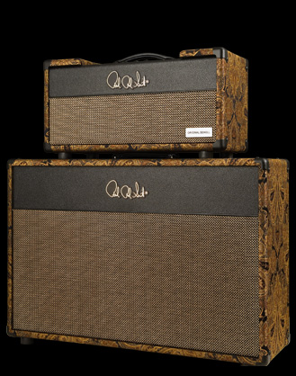

Recalling the complex tones and harmonics of 50's era amps, the Original Sewell brings you sweet highs and tight lows that surround a warm midrange. The Original Sewell has a smooth tone that was crafted to give an expressive, vocal quality to lead work. Notes bloom and sustain with rich harmonics enhancing your fundamental notes. Available in EL34 or 6L6.